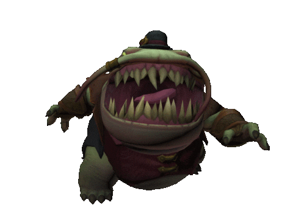

AND THE BATTLE BEGINN!!

Iron Man's Victory Over Bulbazor
Finally, the time had come for the ultimate battle.IronMan stood face-to-face with Bulbazor, the monstrous creature terrorizing the entire city. Amidst the chaos, Iron Man's suit gleamed as he prepared to unleash all his power and intelligence. As Bulbazor approached, it unleashed a powerful energy blast from its mouth, as fierce as flames capable of melting anything in its path. But Iron Man was ready. He activated his latest upgrade: the Repulsor Beam X, a concentrated energy shot aimed directly at the creature’s core. The two forces clashed, neither backing down. But Iron Man had a plan—he discovered Bulbazor’s weakness and used it against him. Dodging the creature’s attacks with precision, he landed the final blow, draining Bulbazor’s energy and causing it to collapse. With the monster defeated, Iron Man stood victorious, ensuring the safety of the city once more. The people cheered, and the skies cleared, signaling the end of the threat. Iron Man looked up with pride, knowing he had once again saved the day.
HOME